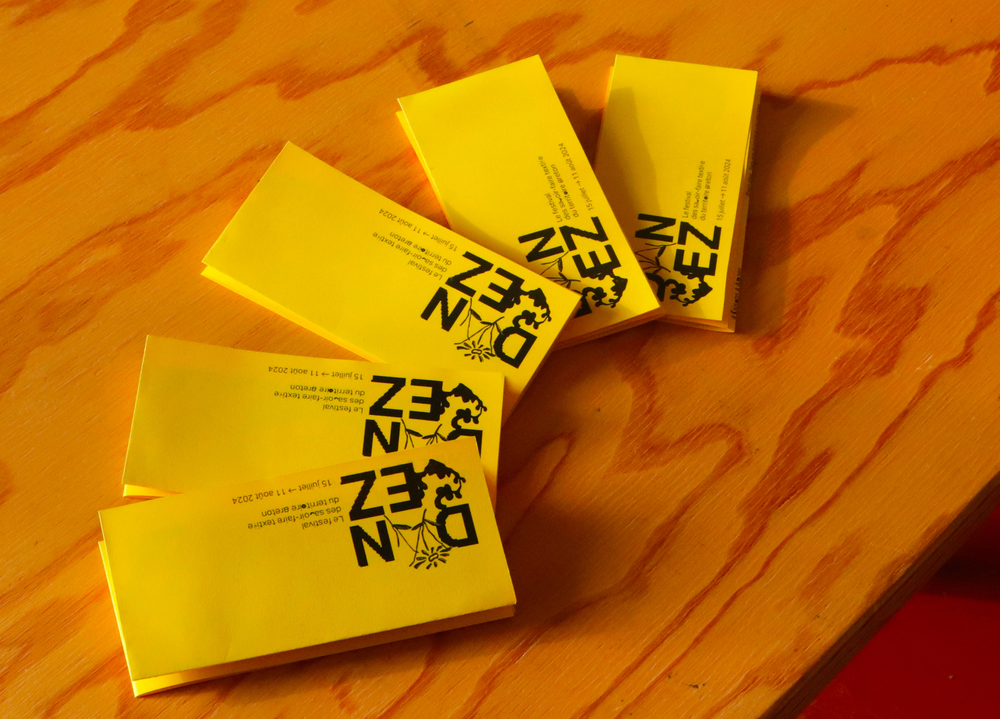
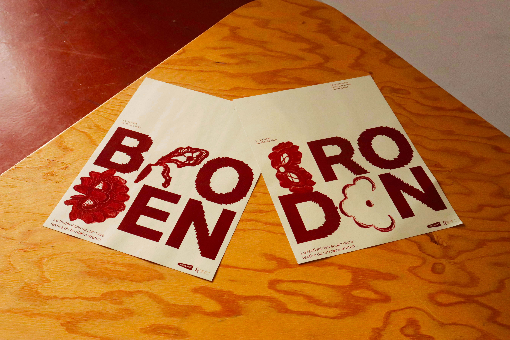
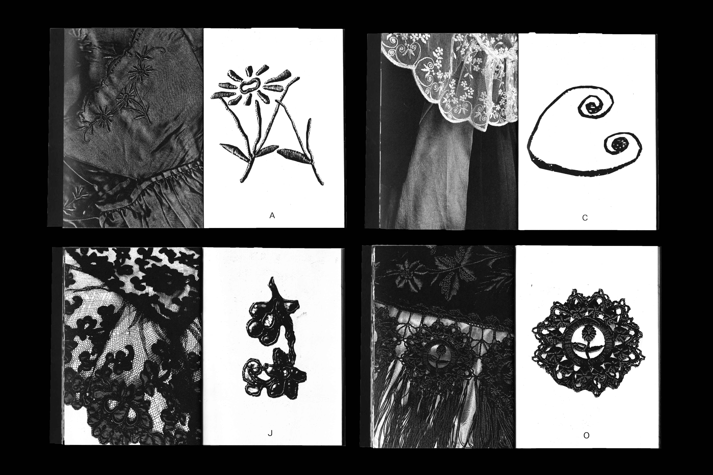
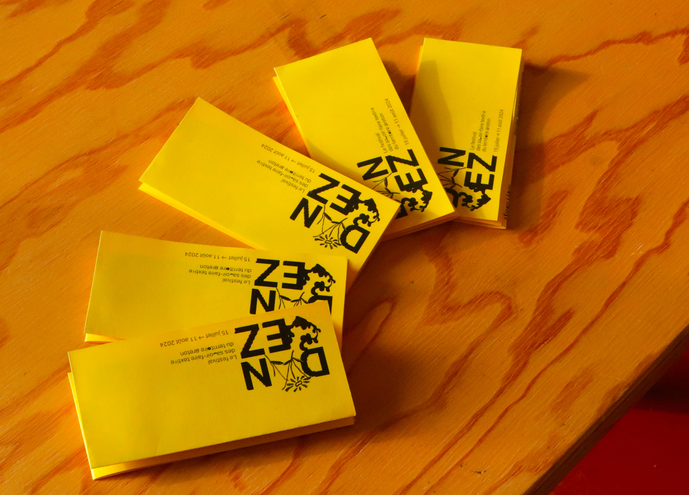
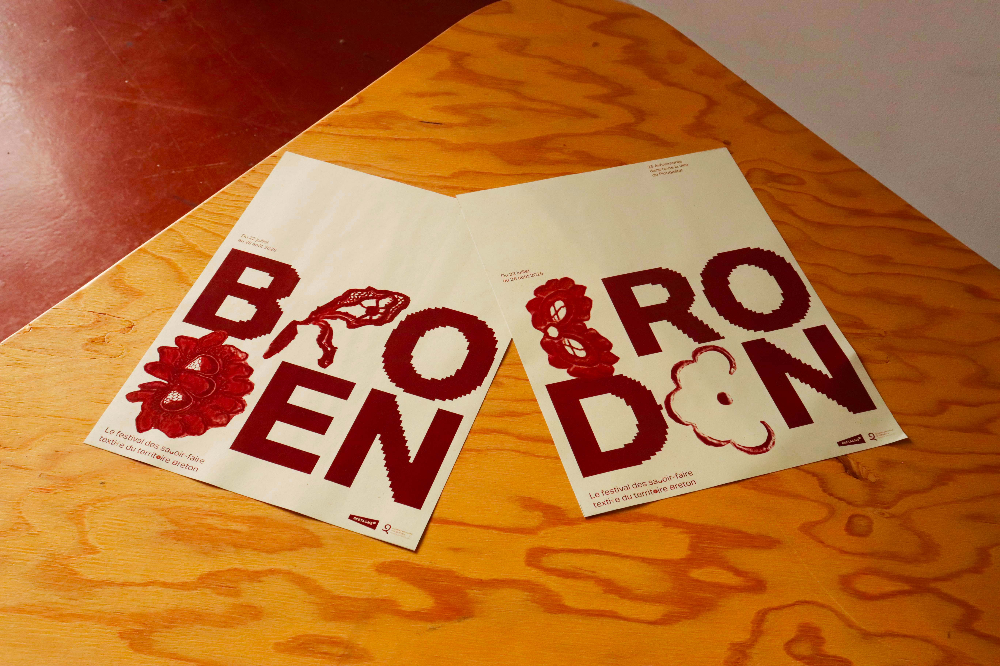
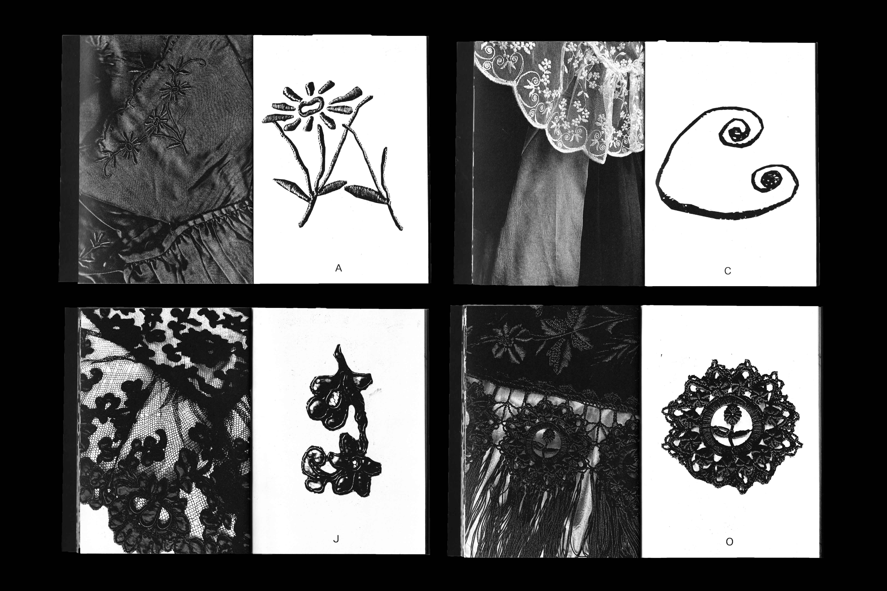

Comment le design graphique peut-il s'inviter dans le milieu de la culture populaire bretonne ? Mon projet explore cette question en utilisant les confédérations du territoire breton pour créer un événement unique visant à promouvoir les savoir-faire traditionnels.
Mon rôle consiste à développer une identité visuelle pour la communication de l'événement. Les enjeux sont de proposer une vision moderne et actuelle d'un sujet souvent perçu comme désuet. L'identité visuelle sera inspirée par la matière.
Je mettrai l'accent sur le savoir-faire avant de parler du territoire. En m'inspirant du travail de Coline Sunier et Charles Mazé, J'ai créer un alphabet alternatif provenant de forme issu d'un corpus d'image.
Grâce à l'utilisation de cet alphabet alternatif, le logo devient modulable et l'identité visuelle évolue en couleurs et en nom à chaque saison, mais grâce aux choix graphiques, l'événement reste toujours reconnaissable.
 




